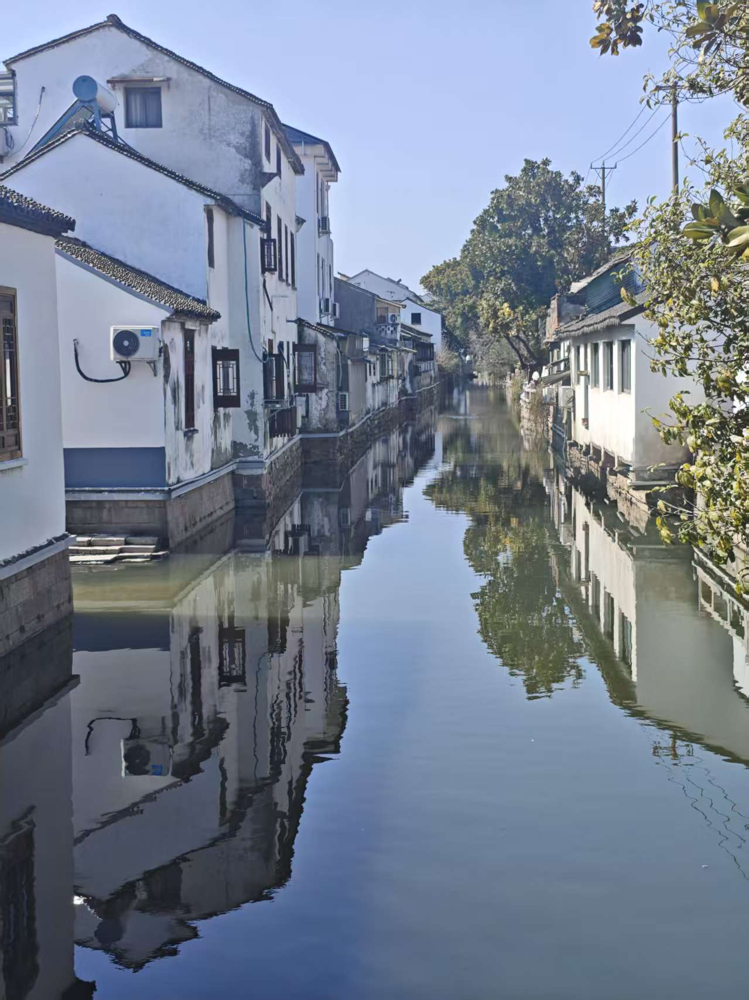
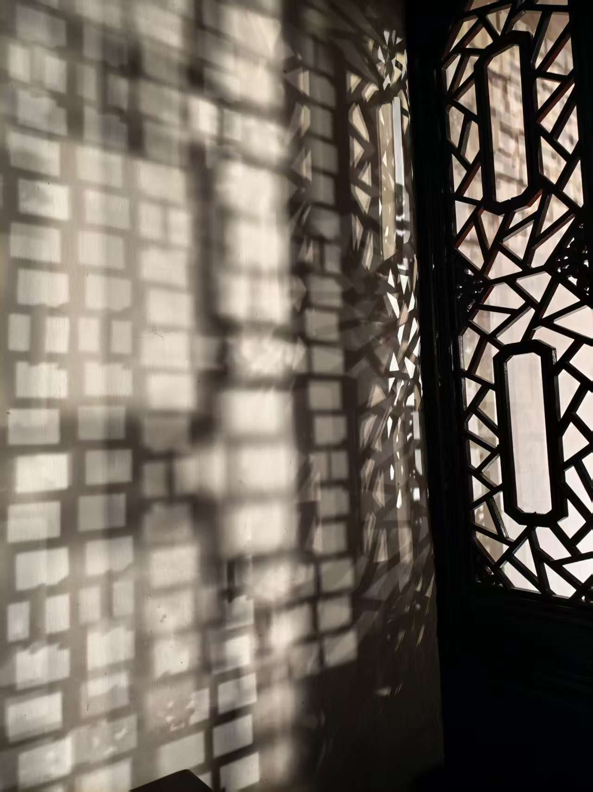
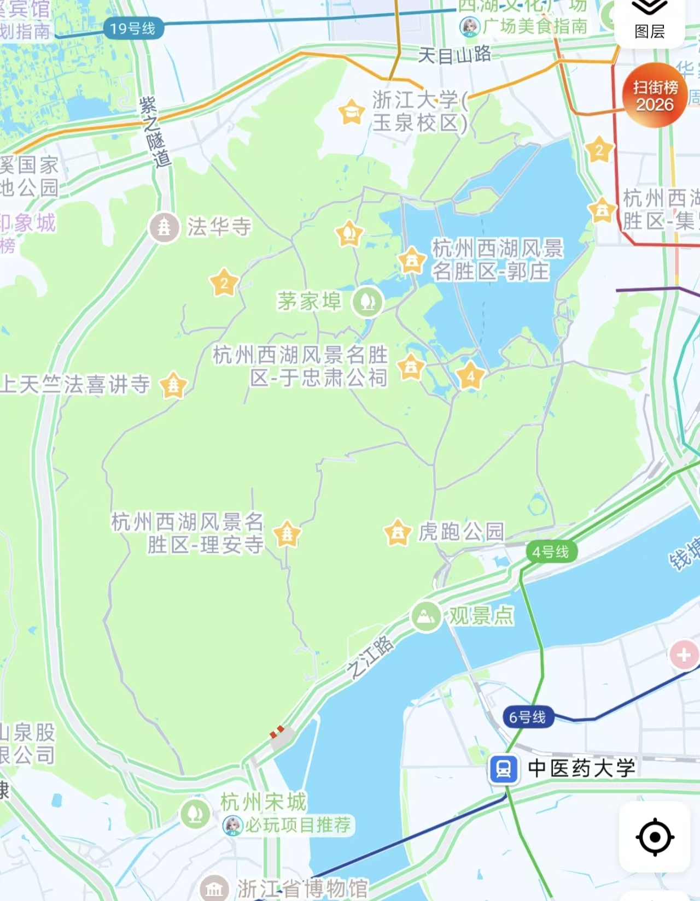
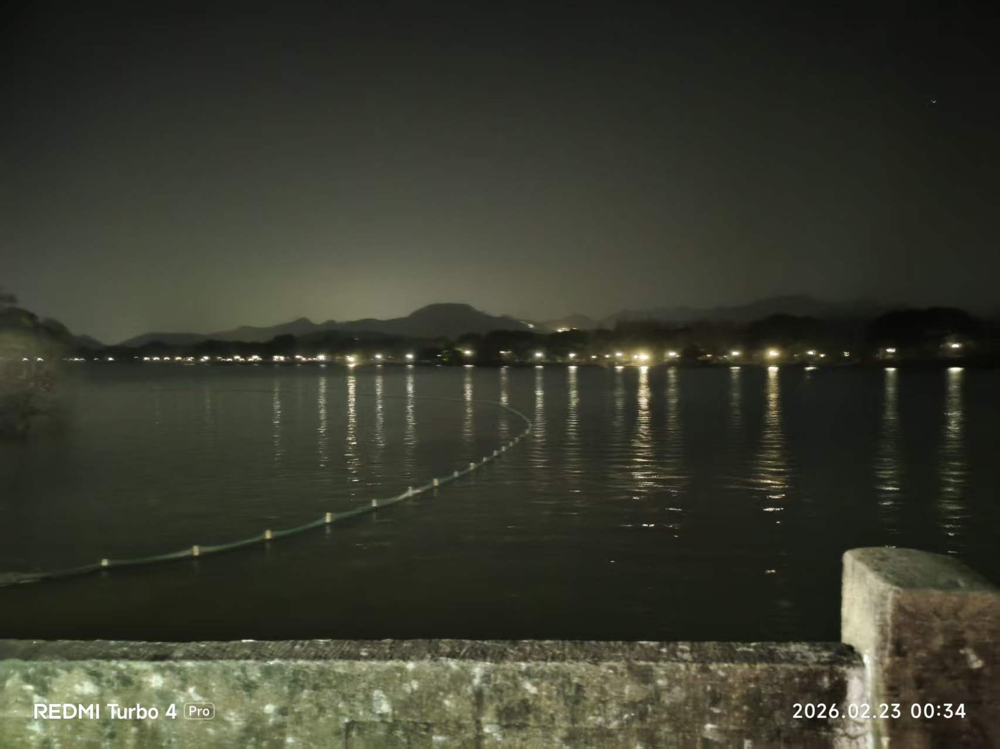
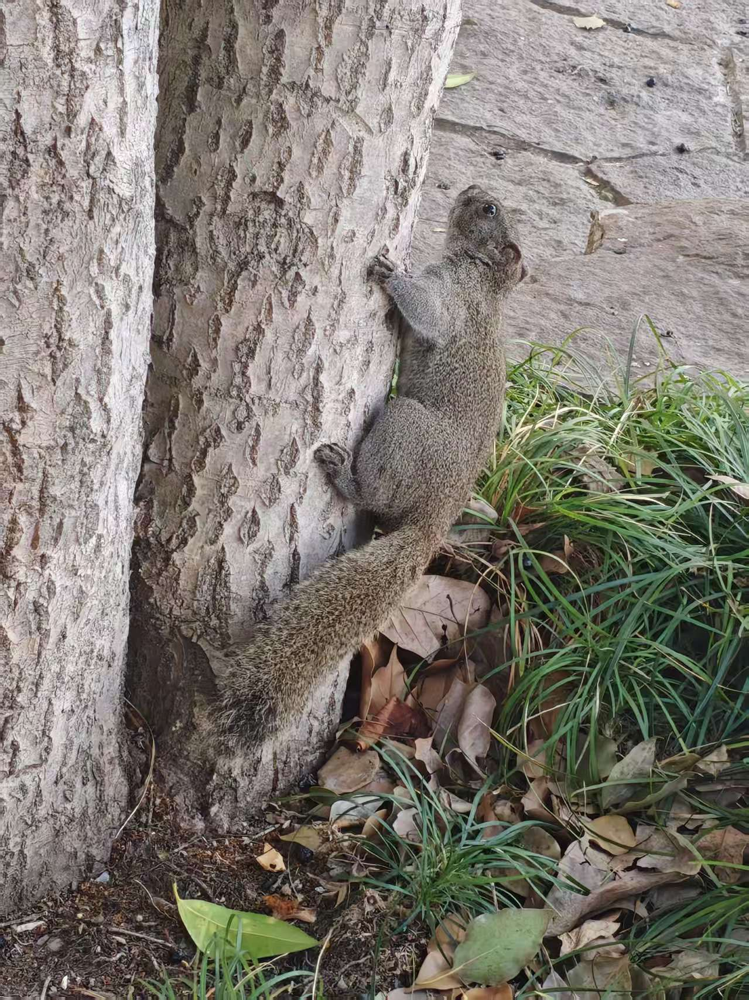
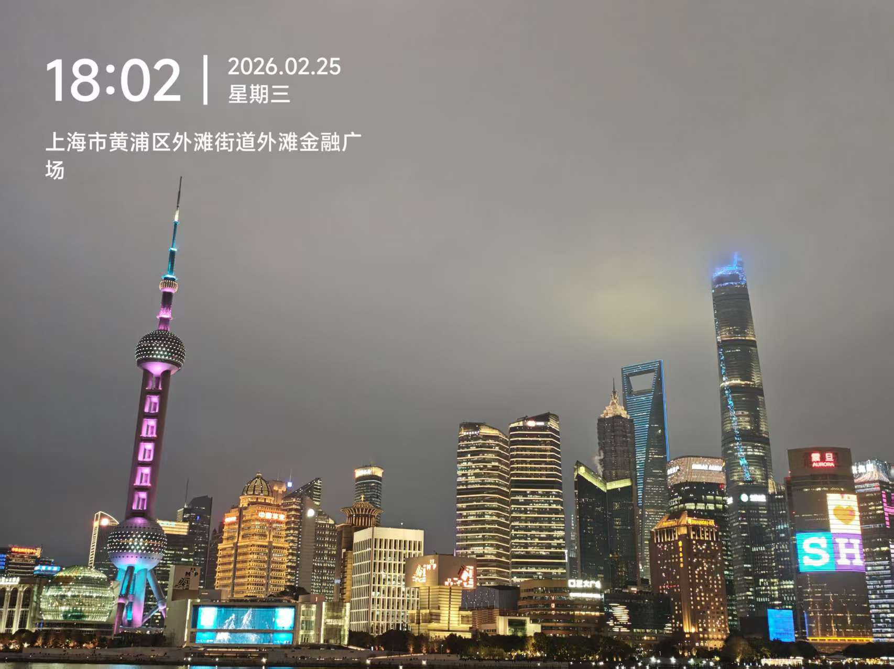
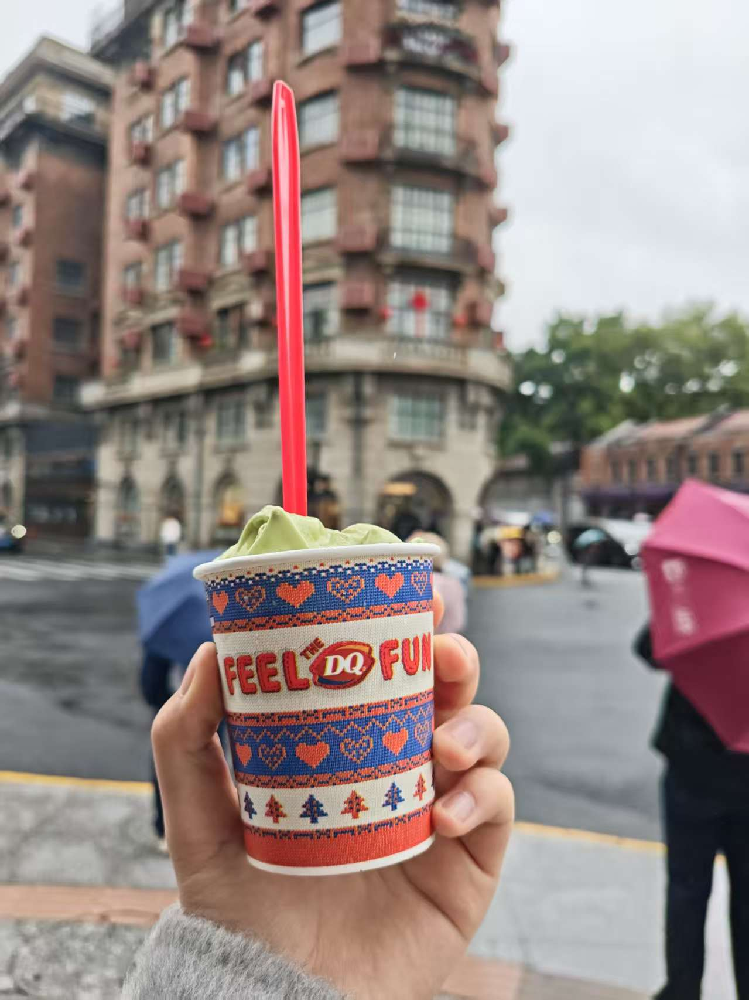
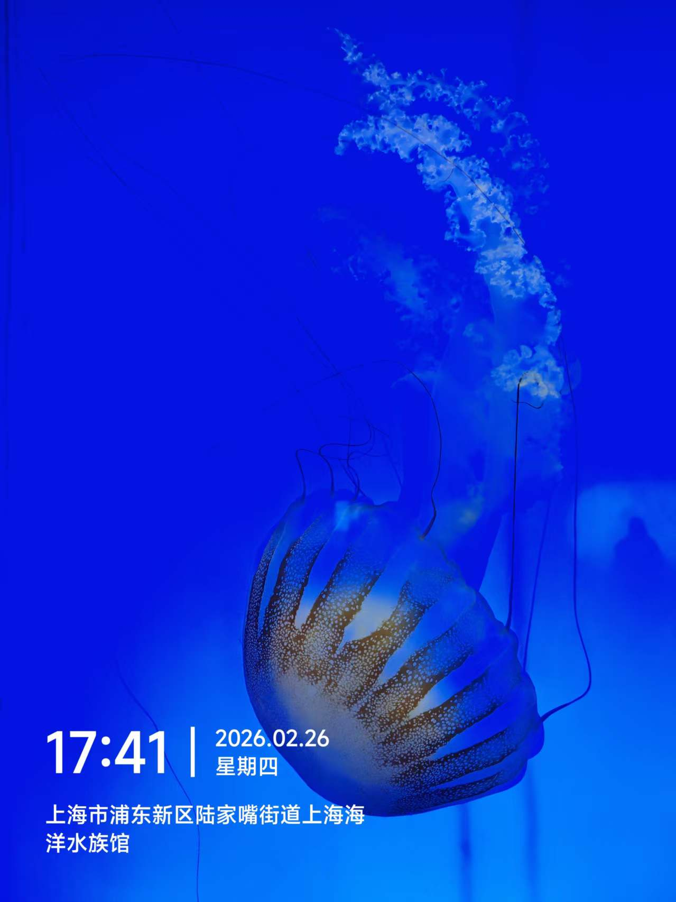
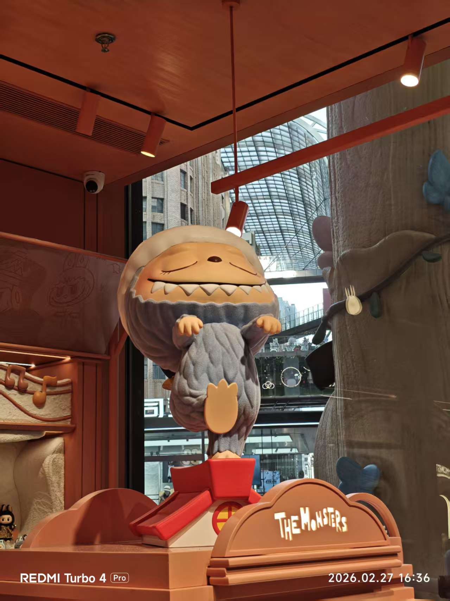

华东旅行记录
现在正坐在回西安的飞机上（嗯当时是2.27，只不过是今天传上来的），上次西安—上海往返都是大晴天，一直可以看见景色，这次往返都是飞到云层上面or白茫茫一片真干净。（突然发现飞到云上面可以拍出星星！肉眼看不）
1.交通体验
来回飞机很快，比高铁便宜，比高铁快，很好。这是我第三，四次坐飞机。无锡几乎都是在打车，地铁不太便捷（但比洛阳便捷），乐游线没有体验上；苏州的城内街道有点小，因为为了保护古建筑吧，所以地铁出行比较方便，最好的该是自行车串联相关景点，但是我弟弟不会骑，就导致走路有点远和累，打车有点短和贵，而且感觉苏州和无锡网约车司机素质是最难评的，说脏话，边开车边玩手机等，真的很拉低体验感；and有趣的是，苏州的外卖小哥都很喜欢边送外卖边放音乐，也是独一份了哈哈。
杭州的话，路很宽阔呀，除了西湖热门景点附近比较堵，其他都还好，租了小电驴体验感很好，骑到了灵隐寺去，可惜赶时间，不然咋说也要好好地欣赏一下沿途风光！那些茶园，林荫道，真的很不错。上海地铁超级发达方便，除了一开始有点挤，其他都好说，地铁和网约车的起步价都比西安高。
2.不同城市的对比
感觉无锡的经济应该是这四个里面最低的，但夜景确实确实很好看！不少景色都是人太多了导致我对它的欣赏阈值变化了，当时觉得没那么好看，离开之后看着照片觉着好漂亮。惠山古镇如下图。太湖渤公岛和鼋头渚也很好玩，太湖很大，太湖仙岛需要坐船过去，坐船时会有很多很多红嘴鸥追逐，抓拍到了不少好看的照片！
苏州的老城区很中式，整体就是江南水乡的感觉，但真的好奇怪，我身处其中时，感触真的很少，园林也或许是我不懂欣赏，找了找角度拍照，然后感觉园林的制作都是一个样的，沧浪亭就随便一看了，但真的老城区保护得好好！寒山寺那里就是，新地方了，和任何城市都很像。


杭州的西湖我相信真的很好看！夜游西湖时，几乎没有灯，后来了解到是为了保护野生动物（很多很多松鼠，各种鸟类，甚至还有野猪）。雨西湖当时就觉得好漂亮，晴西湖当时有雾霾有点在预期之下。感觉西湖确实是一个承载了很多历史与意义的地方，多多了解历史，才会越来越欣赏到它的美，灵隐寺也是走马观花了，但是这次旅行，不会的东西我都拍照问了豆包，也了解了很多！之后再出去的话，我还想继续问ai，这样感觉对景点才有实感。在杭州转的时候，感觉西湖周围一圈都是山，当然也是了解到了西湖周围那一圈山都属于西湖风景名胜区，灵隐寺也属于的，感觉要是住在杭州，爬山也太accessible了。

嗯……夜景就有这么黑

2点回到酒店后睡了3小时又去赶日出啦~
还有肥美的西湖水和可爱的松鼠

上海呢？我对于上海印象比其他的几个都要深一些，现在也可以说是三去上海而不入迪士尼了，之前只是认为迪士尼是一种营销的很好的游乐场，所以也没有很想去玩，这是我的刻板印象了，我妈和我弟弟都很想去，我直接来之前一票否决了，结果了解了一下，感觉还是值得一去的，和我想象的不同，以后不能主观臆断了。上海的老街区感觉不能只去那种有名的武康路，安福路，愚园路之类的，我们住的酒店附近的人民路，老建筑也很多，适合cityride。浦东那边我也没有认真地看除了陆家嘴之外的其他地方，之后也是可以再转转，但把外滩逛够了，逛了好几次哈哈哈。看就看的尽兴吧～不过吧，网上说南京路步行街现在越来越巴了，我也赞同，其实之前认为那个步行街就是奢侈品消费地，现在什么烤串啦，巧克力啦，哪个步行街都有，害。失去了一些特色。不过这次终于终于进了泡泡玛特店逛，我弟弟仿佛打开了新大陆，嚷着要去泡泡玛特买东西，于是最后一天愚园路走了一半我们就去泡泡玛特了，也算是不想让他很后悔或者过于伤心吧，毕竟旅途本来就不该有太多后悔，下次来华东还不知道是什么时候呢。还有一个，就是上海的饭前洗手和服务！饭前洗手在饭店里面几乎都有，进门口一个水龙头，海底捞服务员也会给我们一张温热的纸巾。不过上海的海底捞服务感觉没有西安好啊。




3.与家人的相处
啊，说来好笑与惭愧，经常就是，我弟弟不高兴了，又哭又闹，走的很快。有时也是我不高兴了，就冷着脸走路，还挺不好的，旅行本来就是愉快的事情啊，我弟弟主要是因为没买到他想吃的，我有因为行程被他上厕所耽误生气，也有被质疑的生气，还有莫名其妙的，本来很正常的话，我却觉得被冒犯了而生气，嗨呀嗨呀，得改得进步啊。
4.对自己未来选择的影响
感觉杭州真的好宜居，好喜欢杭州，西湖原来之前是有门票的，现在也没有门票，真的很漂亮啊，更加坚定了我研究生要去北京上海这种城市的想法，以及景点是越逛越多哈哈哈。
回去之后认真学习与体验社会吧，感觉生活充实时，以前内耗的事情都会远离自己。
犹豫ing，下学期要不要带家教啊，要不要啊，一方面想着带家教可以获得一些积蓄，自己出去可以玩更多地方，另外又觉得，现在应该多学些东西增加履历。
5.对旅游的体会
我或许不是一个合格的规划者，有两次我们晚上都只睡了三四个小时，一次夜游西湖，一次夜游黄浦江，这样太耗人了，我是年轻人可以，但是不能这么整啊，起码要睡够。
And这次我们都觉得脚好疼，走的太太太多了，有时候感觉自己脚要裂了哈哈哈，安排的景点太多了，很累人的，之后要张弛有度，哪怕在酒店躺半天也是好的，休息好了才可以更好的出行。
还有当地美食，可以到了再搜搜，苏州有一个炖羊肉貌似之后苏州那里有超多连锁店，我们经过了好多次，结果一次也没有进去。
好笑的是，在苏州看园林的那天，晚上睡觉落枕加上肚子不舒服，真是太可怕了。
6.住宿体验
无锡的没有窗户，真的很糟糕，因为觉得换气会很麻烦，苏州没有电梯，在2楼，旁边是兰州拉面，很正宗的味道哈哈哈哈，满酒店都是，上海那个酒店旁边也是一家兰州拉面，蚌埠住。杭州的体验感最好，房子大，有城市夜景，能看到西湖一角，还是最便宜的，上海的呢，也很好！给我们免费升了房间，很干净。
Anyway，其实是旅游我就很喜欢啦，各种摩擦什么的，也是生活的一部分，我只是希望我能够尽量与他人度过美好的不留遗憾的时光罢了，尤其是家人。当然我也希望我妈积极学习，不要老说自己学不会记不住。